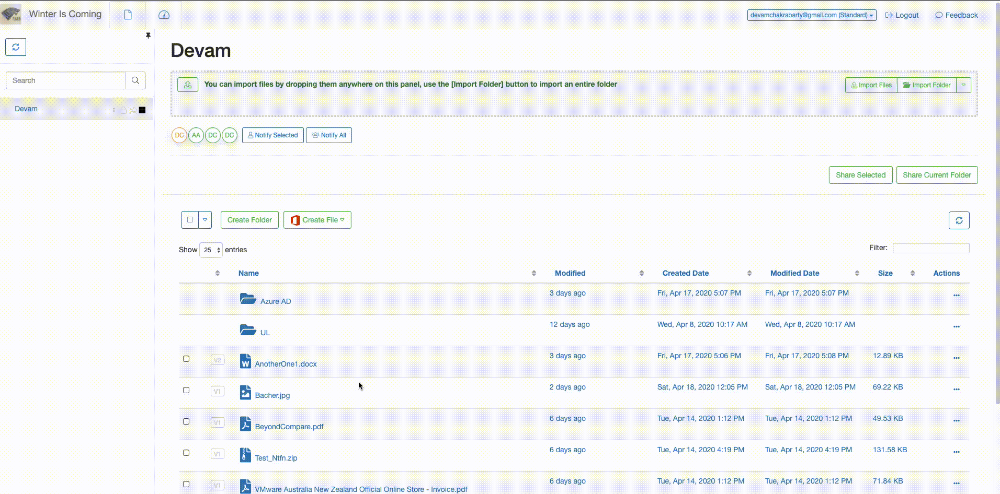

Version 2.9.x
Table of Contents
Feature requests / enhancements implemented
User Preferences
IE 11
Background operations
Modals
Introduction
Welcome to the February 2020 release of SureDrop version 2.9.0. There are a whole bunch of updates in this version that we hope you will like, some of the key highlights include:
Document versioning
Document collaboration
Secure ad-hoc sharing, UX updates, etc.
You can watch the SureDrop overview video in case you’re not familiar with the system. Other technical know-hows about the product can be found here in SureDrop Documentation.
Version Information
Component |
Version |
|---|---|
Docker images |
|
User Interface |
|
API |
|
Database |
|
Deliverables
Docker images - which can either be downloaded from Docker Hub with the credentials provided during installation; or through the
create-suredrop.batinstallation and upgrade script.Docker volumes - which are installed automagically as part of the installation process. We now have a volume associated with each of our containers.
Release notes - which is this document itself.
Feature requests / enhancements implemented
Versioning
Document versioning refers to the use and management of multiple versions of a document. This is more generally known as file versioning or file version management, for general file types. The idea behind document versioning is that SureDrop should be able to handle multiple versions of a single file and provide access to users. It is now possible to recover previous versions of a file and see the version history. This feature is accessible by clicking on the “Info” button on a document.
Collaboration
It is now possible to add comments to document versions and to add a description to a document. This allows multiple users to collaborate and understand the purpose of document updates. To access this feature use the same “Info” button on a document shown in document Versioning. For real time collaborations however, consider using your Office 365 account in SureDrop.
Maintenance Mode
There is now a maintenance mode which allows the system to alert users when maintenance is about to take place. Non admin users are warned and then logged out.
Secure Ad-hoc Sharing
It is now possible to add a password to an ad-hoc share. Document notifications are now available on both download and upload. The sharing page now times out due to inactivity.
Notifications
Document notifications are now clearer and now highlight the relevant files. The username is also pre-populated for your convenience when you click on the link in the notification email.
UX updates
The user interface has been updated (standardised) to make it more intuitive for selecting and downloading files.
Defects resolved
User Preferences - User preferences are now stored in the backend, which means the the tour dialog will no longer keep popping up every time the browser cache is cleared.
IE11 - While we do not support IE11, a large effort was made to attempt to make as many of SureDrops features work as possible.
Background operations - Background operations were introduced for some long running processes. Renaming, deleting and copying a folder are all now background operations.
Modals - Feedback and sharing were both moved to modal dialogs to improve consistency.
Upgrades
SureDrop upgrade process is seamless and easy via the
create-suredrop.bat script as described in Upgrading or diagnosing a SureDrop instance.
Minor Releases
Version 2.9.1 - 14th Feb 2020
Cannot see pending users: Some legacy systems have users without any default roles associated with them. SureDrop 2.9.0 failed to load those users and any subsequent users due to a JS exception in code.
Version 2.9.2 - 18th Feb 2020
Multiple files drag and drop: As part of making the cut and paste operation asynchronous (in the background) we inadvertently introduced a timing issue where sometimes dragging and dropping multiple files moved only some of the selected files. The selected files were deleted from the source location but didn’t end up in the destination, which made non-administrators lose the file completely.
Version 2.9.3 - 19th Feb 2020
Special characters in password: SureDrop sanitises every bit of data that flows in to the APIs. As part of security changes we got a little carried away and sanitised the passwords too; which meant that users couldn’t use some special characters in their passwords.